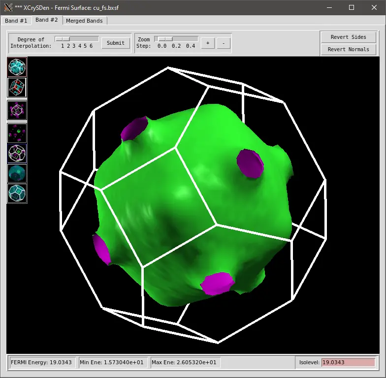

Superfície de Fermi
Aqui vamos calcular a superfície de Fermi do cobre. O primeiro passo é o cálculo autoconsistente.
src/cu/pw.scf.cu.in
&control
calculation = "scf",
prefix = "cu",
pseudo_dir = "../pseudos/",
outdir = "./tmp/cu/"
/
&system
ibrav = 2,
celldm(1) = 6.678,
nat = 1,
ntyp = 1,
ecutwfc = 40,
ecutrho = 300,
occupations = "smearing",
smearing = "mp",
degauss = 0.01,
nbnd = 16
/
&electrons
conv_thr = 1e-9,
/
ATOMIC_SPECIES
Cu 63.546 Cu_ONCV_PBE-1.0.oncvpsp.upf
ATOMIC_POSITIONS alat
Cu 0.00 0.00 0.00
K_POINTS automatic
8 8 8 1 1 1mpirun -np 4 pw.x -in pw.scf.cu.in > pw.scf.cu.outEm seguida, fazemos o cálculo bands numa malha uniforme e densa de pontos k:
src/cu/pw.bands.cu.in
&control
calculation = "bands",
prefix = "cu",
pseudo_dir = "../pseudos/",
outdir = "./tmp/cu/"
/
&system
ibrav = 2,
celldm(1) = 6.678,
nat = 1,
ntyp = 1,
ecutwfc = 40,
ecutrho = 300,
occupations = "smearing",
smearing = "mp",
degauss = 0.01,
nbnd = 16
/
&electrons
conv_thr = 1e-9,
/
ATOMIC_SPECIES
Cu 63.546 Cu_ONCV_PBE-1.0.oncvpsp.upf
ATOMIC_POSITIONS alat
Cu 0.00 0.00 0.00
K_POINTS automatic
30 30 30 0 0 0mpirun -np 4 pw.x -in pw.bands.cu.in > pw.bands.cu.outPor fim, processamos os dados com a ferramenta de pós-processamento fs.x. Este é o arquivo de entrada:
src/cu/fs.cu.in
&fermi
outdir = "./tmp/cu/"
prefix = "cu"
/mpirun -np 4 fs.x -in fs.cu.in > fs.cu.outPodemos visualizar o arquivo de saída cu_fs.bxsf com o programa XCrySDen:
xcrysden --bxsf cu_fs.bxsf